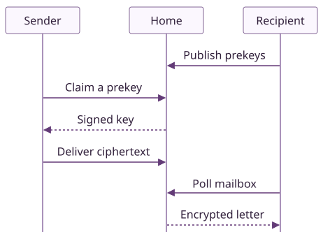

Encrypted messages
Two named accounts on the same Home can exchange messages while one of them is offline.
Starting a conversation
The recipient’s registered device publishes signed one-time prekeys. The sender resolves a named event to its author, checks the signed contact and claims a prekey. Olm uses the recipient’s public key material to establish an encrypted session.

Delivery and retries
Before upload, the sender saves its updated encryption session, local history and signed ciphertext together. The Home deduplicates exact retries and holds queued mail for up to 30 days. The recipient saves the advanced session and cursor before its next inbox request acknowledges earlier delivery. A Home acknowledgement means the Home accepted the packet.
Requests and blocks
An account can restrict first contact to approved people or apply a minimum age. The Home holds matching requests until accepted, dismissed, blocked or expired. Approval releases held messages. A block stops new private deliveries in both directions and removes queued mail between the accounts. Conversation history already on either device remains there.
Who can read what
Message text and display labels travel inside ciphertext. The Home can see the participants, timing, volume and packet sizes. Each account currently registers one messaging device per Home. The Olm identity and ratchets stay on that device, including when the owner restores their public account elsewhere.